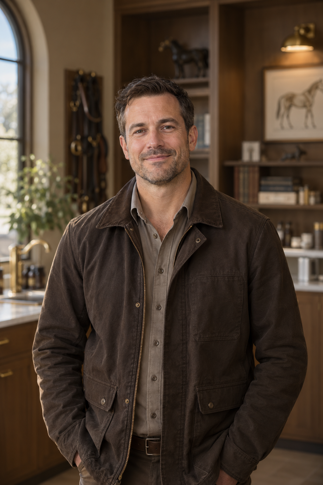

Péče o psy a kočky
MVDr. Anna Novotná
Preventivní péče a interní medicína malých zvířat. V jejím přístupu má své místo klid, pozornost i prostor pro otázky majitelů.
Za každou návštěvou jsou lidé, kteří naslouchají vám a vnímají potřeby vašeho zvířete.
Preventivní péče a interní medicína malých zvířat. V jejím přístupu má své místo klid, pozornost i prostor pro otázky majitelů.

Prevence a terénní péče o koně. Staví na spolupráci s majitelem a respektu k povaze a každodennímu životu každého koně.
Podpora při vyšetření a péče o pohodlí pacientů. Pomáhá vytvořit prostředí, ve kterém se zvířata i jejich majitelé cítí vítaní.
Otevřená komunikace, vzájemná spolupráce a respekt ke zvířatům. Hodnoty, které spojují péči v ordinaci i ve stáji.
Kontaktujte nás